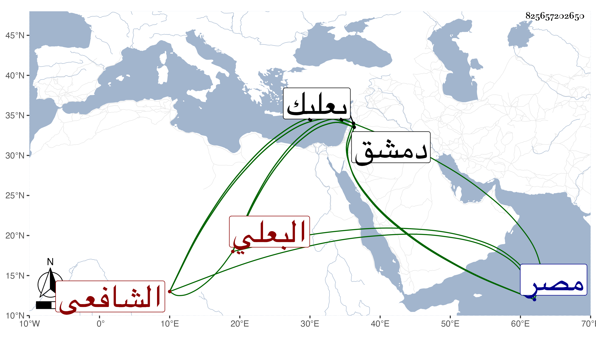

0902Sakhawi.DawLamic.ITO20230111-ara1.EIS1600.825657202650
Biography ID: 825657202650
389
محمد بن محمد بن علي بن محمد بن حسن البهاء أبو الفضل بن ناصر الدين ابن العلاء البعلي الشافعي سبط الشيخ برهان الدين بن المرحل ، أمه سلمى ويعرف بابن الفصي بفتح الفاء ثم صاد مشددة قرية قريبة من بعلبك يقال لها فصة . ولد في ربيع الأول سنة سبع وخمسين وثمانمائة ببعلبك ومات أبوه وهو صغير فكفلته أمه وأخوه ناصر الدين محمد، وأجاز له جده البرهان وغيره من المسندين في بعض الاستدعاآت وسمع من حسن بن علي بن نبهان وحفظ القرآن والتنبيه وتصحيحه للأسنوي وجمع الجوامع وألفية النحو وعرض على جماعة من أهل بلده ، ثم ارتحل لدمشق للاشتغال فعرض أيضا على البدر بن قاضي شهبة والزين خطاب والنجم بن قاضي عجلون وأخيه التقي بل قرأ بحثا على كل منهم ربعا من كتابه التنبيه ثم رجع إلى بلده فحفظ المنهاج الفرعي في مائة يوم وتصحيحه الأكبر للنجم المشار إليه في أربعة أشهر وعاد لدمشق بعد وفاة من عد التقي منهم فلازمه نحو ثمان سنين بل وأخذ عنه في أصوله بحيث كتب على جاري عادة الشاميين بالشامية البرانية وأذن له بالإفتاء والتدريس ، وفي غضون إقامته الثانية بدمشق حفظ ألفية الحديث وعقائد النسفي وتلخيص المفتاح وتصريف العزي والجمل للخونجي وأخذ في العربية عن لاشهاب الزرعي وفي الصرف والمنطق عن ملا كمال الدين النيسابوري العجمي وفي أصول الدين عن شخص كردي ودخل مصر في بعض ضروراته فقرأ على الزيني زكريا قطعة من المنهاج ومن شرحه للروضة وأذن له ودام بها عشرة أشهر وتميز في حافظته مع تمتمة قليلة وشكالة جميلة وأدب وتواضع مع كون سلفه كلهم من مقطعي الأجناد ، وولي تدريس النورية ببلده تلقى نصفه عن خاله البدر محمد بن البرهان بن المرحل المتوفى سنة تسع وسبعين والنصف الآخر نيابة وحج في سنة أربع وسبعين ثم في سنة ثمان وتسعين وجاور التي تليها على طريقة حسنة من الانجماع وأقرأ غير واحد من الطلبة ولقيني هناك فسمع مني وأنشد بحضرتي مما قاله جوابا لمطالعة :
| ورد المثال فقلت عند وروده | يا أذن دونك قد أتت أخباره |
| والعين لم تقنع بذا فانشد له | إن لم تريه فهذه آثاره |
وقوله :
| أوليتني منك الجميل تكرما | وملكت رقي بالأيادي الوافره |
| فعجزت عن شكري لها ويحق لي | فشبيه كفك من بحار زاخره |
وهو الآن شيخ بعلبك ومدرسها ومفتيها وشيخ مدرسة النورية بها وناظر جامعها الكبير .
